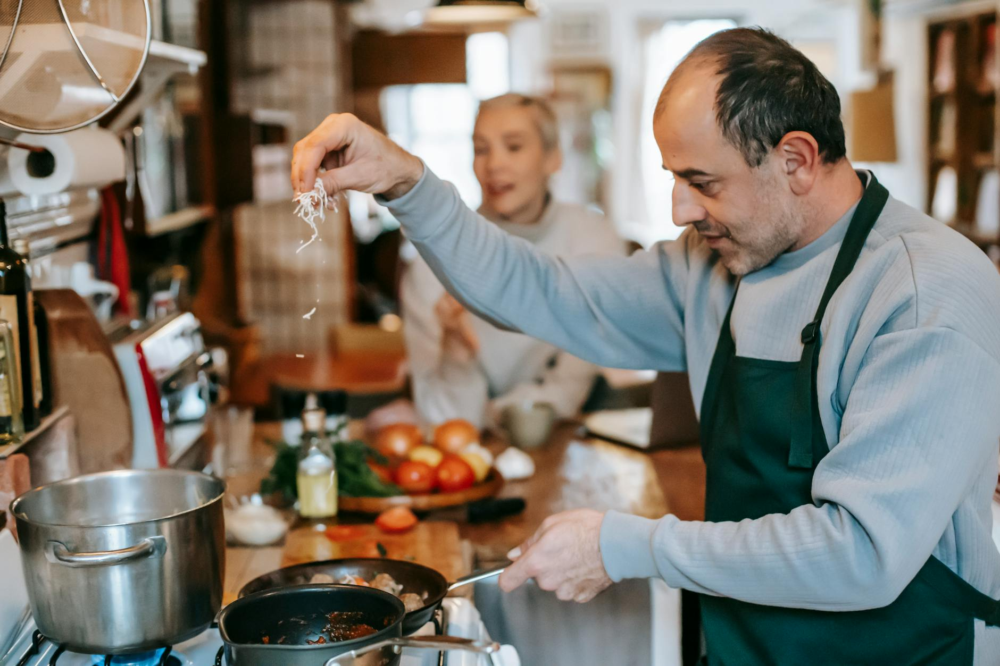

Gondolkoztál már azon, hogy a kedvenc éttermedben felszolgált fogások miért érződnek mérföldekkel jobbnak, mint amit otthon készítesz? Pedig gyakran ugyanazokat az alapanyagokat használjátok. A titok nem a méregdrága konyhai gépekben vagy a titkos összetevőkben rejlik, hanem néhány alapvető, mégis sorsfordító technikában.
A jó hír az, hogy ezeket a „séf-trükköket” te is könnyedén elsajátíthatod. Nem kell hozzá mesterszakácsnak lenned, csupán egy kis odafigyelésre és a megszokott rutinjaid újragondolására van szükség.
Íme 5 egyszerű, de rendkívül hatékony technika, amellyel a hétköznapi vacsorákat is igazi gourmet élménnyé varázsolhatod.
A profi konyhák legfontosabb szabálya a mise en place (francia kifejezés, jelentése: „mindent a helyére”). Ez azt jelenti, hogy mielőtt egyáltalán bekapcsolnád a tűzhelyet, minden alapanyagot előkészítesz.
Hányszor fordult elő veled, hogy a fokhagyma már égett a serpenyőben, miközben te még kétségbeesetten próbáltad felvágni a paradicsomot? A kapkodás a túlfőtt, leégett vagy alulfűszerezett ételek legfőbb oka.
Ha így teszel, a főzés nem stresszes rohanás, hanem egy kellemes, meditatív folyamat lesz, ahol maximálisan az ízekre és a textúrákra koncentrálhatsz.
Az otthoni szakácsok egyik leggyakoribb hibája, hogy túl alacsony hőfokon, óvatoskodva főznek. Ettől a húsok kiszáradnak és rágóssá válnak, a zöldségek pedig összeesnek és pépessé alakulnak.
Ez a kémiai folyamat felelős azért a csodálatos, aranybarna kéregért, ami a sült húsokon vagy a pirított zöldségeken keletkezik. Ez nem égés, hanem a cukrok és aminosavak karamellizációja, ami elképesztő ízmélységet ad az ételnek.
Ha az ételednek „hiányzik valami”, de már tettél rá elég sót, a válasz szinte biztosan a sav. A profi séfek tudják, hogy a savak életre keltik az ízeket és átvágják a nehéz, zsíros textúrákat.
Az éttermi ételek azért is olyan izgalmasak, mert minden falat más élményt nyújt a szájban. A textúrák kontrasztja ébren tartja az érzékeinket. ha minden puha és pépes, az étel hamar unalmassá válik.
Törekedj arra, hogy minden ételben meglegyen a következő három elem: * Puha/Krémes: Pl. selymes pürék, mártások, lágy sajtok. * Roppanós/Ropogós: Pl. pirított magvak, kruton, friss retek, chipset formázott zöldségek vagy töpörtyű. * Rágós/Tartalmas: Pl. tökéletesen elkészített hús, gomba vagy al dente tészta.
Tipp: Ha krémlevest készítesz, ne csak pirított kenyérkockát szórj rá. Próbáld ki a pirított tökmagot egy kevés tökmagolajjal és parmezán forgáccsal!
A közmondás igaz: először a szemünkkel eszünk. Egy gyönyörűen tálalt, egyszerű étel sokkal finomabbnak tűnik, mert az agyunk már a látvány alapján vizuális élvezetet és minőséget társít hozzá.
Az éttermi szintű főzés nem velünk született tehetség, hanem technikák összessége. Ha legközelebb kötényt kötsz, ne csak receptet kövess, hanem figyelj a részletekre: készíts elő mindent, használj bátor hőfokot, egyensúlyozd az ízeket savakkal, játssz a textúrákkal, és szánj két percet a tálalásra.
Meg fogsz lepődni, hogy ezek az apró változtatások milyen elképesztő különbséget jelentenek majd az asztalnál! Jó étvágyat!